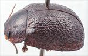
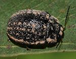
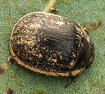
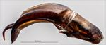
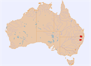

Click on images to enlarge


Male, Liston, NE New South Wales


Male, Liston, NE New South Wales


Male, Thalgarrah, NE New South Wales

Aedeagus, dorsal view (Yarrowyck, NE New South Wales)


Aedeagus, lateral view (Yarrowyck, NE New South Wales)


Distribution
Name
Trachymela sp. Ta166
Reference specimen
2018-002b, Liston, N.E. New South Wales
Adult Description
Length: ♂ 7.9–8.8 mm (n=15), ♀ 8.8–9.5 mm (n=8).
Colouration:
- Head: Very dark reddish-brown, with extensive areas of black anterior to fronto-clypeal suture and often extending posteriorly from there, sometimes completely black, mandibles mostly black; antennomeres 1–2 light brown, 3–4 grading from light brown to black, 5–11 black.
- Pronotum: Black, sometimes with lateral margins, less often anterior margin and rarely, posterior margin dark reddish-brown.
- Scutellum: Black.
- Elytra: Black, sometimes completely so, but usually with some parts of marginal area and small longitudinally aligned patches in 2 or 3 rows along centre of disc reddish-brown.
- Venter & Legs: Venter black, epipleura black.
- Cuticular Wax: Brown, a very sparse sprinkle over most of surface with much denser concentrations along the lateral margins of both prothorax and elytra, on either side of midline of head and dotted along two (sometimes a partial third) bands running across the centre of disc of elytra.
Morphology:
- Shape: Quite evenly rounded but relatively flat, highest point about halfway along elytral margin; surface slightly flattened in front of highest point, ventrites project a short distance below elytral epipleura.
- Head: Punctures moderate in size (pd ≈ 1.5–2 × ef) and quite evenly but densely distributed. Antennae moderately long (AL/BL: ♂ 39–42%, ♀ 34–36%), filiform.
- Pronotum: Evenly curved transversely over discal region, lateral margins slightly explanate, sometimes very slightly, with foveal depression very shallow or even absent though always with a slight rounded elevation near its centre, puncturation always clearly impressed, evenly and quite densely distributed in discal area with a mix of puncture sizes usually present, the larger fractionally larger than those on head, becoming much coarser at lateral margins. Front margins join the thinner lateral margins in a smoothly rounded right-angle, with lateral margin straight for a very short distance then curving smoothly and gradually towards rear margin, becoming noticeably thicker posteriorly.
- Scutellum: Smooth, though surface slightly wrinkled, unpunctured.
- Elytra: Punctures relatively evenly distributed but distinct only in a strip adjacent to suture from scutellum to about summit, elsewhere obscured by the network of thickened interstices, with much smaller punctures scattered very sparingly on the interstices; interstices are prominently raised to form a network of ridges and wrinkles over the whole surface of disc, with a few slightly thicker ones appearing as inconspicuous verrucae scattered among them, posterior third of marginal area prominently concave, surface discontinuous under humeral callus. Vertical extension of epipleura small (HCE/PW = 0.29–0.32).
- Venter: Prosternal process variable, narrowest anteriorly or almost parallel-sided, lightly closed anteriorly, short setae present at rear of prostrenal process and on mesoventrite, a single seta on anterior and median trochanter; front edge of metaventrite beveled, truncate.
Male Genitalia (Aedeagus):
- Dimensions: Moderately long (LPE/BL = 29–32%).
- Dorsal view: Sides of shaft parallel from base to about 15–20% of distance from apex, from there sides converge towards apex initially gradually, then more rapidly, dorsal surface smoothly curved with dorso-median channel present, though sometimes very faint, dorsolateral channels well-defined, tip prominent but truncate.
- Lateral view: Shaft almost evenly curved throughout most of length, then a pronounced (about 30°) downward curve shortly before apex, thinning towards apex over about 15–20% of length, tip strongly deflexed, flagellum thick, flattened and deeply grooved dorsally, thinning rapidly.
Immature Stages
Unknown.
Similar species
- Ta217: Very similar in external structural features and colouration to Ta166, but differs in the smaller body length of individuals and the different distribution and colours of the cuticular wax. The aedeagi of the two species are similar structurally, but that of Ta217 is more strongly curved downwards (in lateral view) than that of Ta166.
- Ta20: Has a similar shape to Ta166, with greatest height either at or a little behind centre of elytral margin. Its elytral surface is smoother, lacking the small verrucae that extend some way above the level of the interstices in Ta166. Most specimens of Ta20 have lighter-coloured longitudinal semi-continuous interstices on the elytra and a very even distribution of cuticular wax.
- Ta23: The pattern of distribution of cuticular wax on the elytra tends to be quite similar in this species, while the sculpture of the elytra is similar in this species and variety Ta23b. They may be distinguished by the much lighter colouring of Ta23 ventrally, especially the brown rather than black epipleura.
Notes
- Host Associations: Collected from Eucalyptus blakelyi, E. prava, and unspecified smooth-barked and box-barked eucalypts.
Copyright © 2026. All rights reserved.